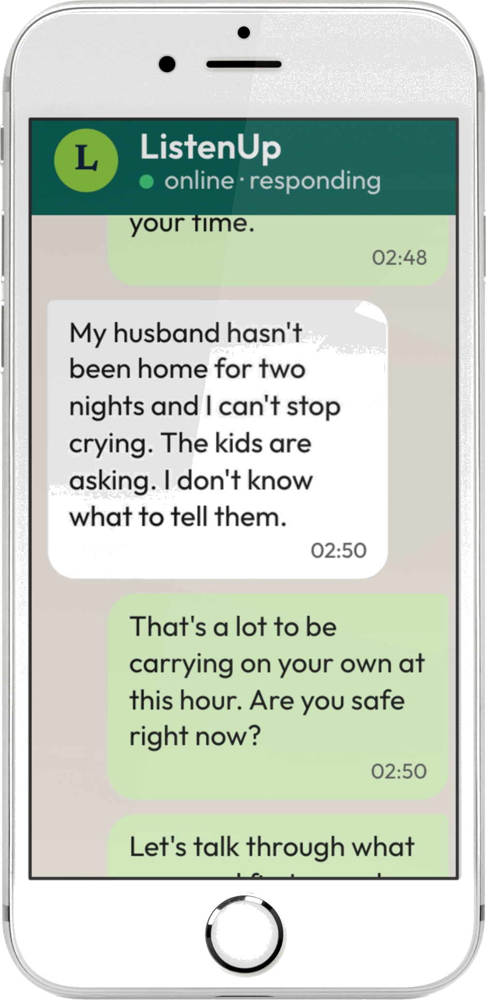

01 / Mental Health
When the inside is louder than the outside.
Wellness, family & bereavement counselling. Trauma debriefing within 72 hours. Parenting support. PTSD-informed care.
Mental health, trauma response, and mediation that actually works. Real humans, on the other end of a WhatsApp message, at 3am, in your language — when you don't know what else to do.
A national network of qualified counsellors, mediators, social workers and case managers — across all nine provinces.


It's the medical that keeps us alive. It's the talking that lets us live. We've been doing this since 2017 — quietly, properly, with real people on the other end of the line.
We don't do chatbots. The voice on the other end of your message is a real, qualified human.
We don't do scripts. We do containing conversations, in your language, on your terms.
We don't do nine-to-five. We answer at 3am, on a Sunday, on Christmas Day, on the worst day of your life.
We don't do wellness theatre. We do trauma debriefing, mediation, family work, escalation when it's needed.
We don't pretend you have to be okay. You're allowed to be in pieces. We'll sit with you anyway.
We do show up. Clinically, professionally, every single time — backed by HPCSA-registered professionals across all nine provinces.
ListenUp is our 24/7 confidential, one-on-one WhatsApp support service. End-to-end encrypted. No queue. No bot. No script. Just a qualified case manager — and behind them, a national network of professionals ready to escalate the moment they're needed.

Five questions. Two minutes. We won't store anything — your answers don't leave your browser. We just want to help you decide what to do next.
We work across mental health, mediation, and physical response — clinically supervised, governance-grade, and built for the moments that actually matter.
Wellness, family & bereavement counselling. Trauma debriefing within 72 hours. Parenting support. PTSD-informed care.

Family & divorce mediation. Workplace conflict before it hits the CCMA. Legal coaching that respects your wallet and your sanity.

Bundled armed and medical response, dispatched on a clinical decision — not a guess. Nationwide, every province, 24/7.
When a ListenUp conversation flags real and present danger, our clinical team can trigger an armed and medical response unit to the caller's location. The decision is clinical. The dispatch is national. The liability stays where it belongs.
A woman messaged at 11pm: ex-partner was on his way to the house, she was alone with the kids, she had no plan. Within seven minutes our case manager had assessed risk, clinically triggered dispatch, and stayed on WhatsApp with her until the response unit arrived in the driveway. She is alive. Her kids slept through it.
Anonymised case files — moments where TTP was called in and a real life turned. Names and identifying details have been changed; the work and its outcomes have not.
Two students. Twenty-four hours apart. We moved our practice on-site for three months.
Read the story →A workplace incident pulled long-buried trauma to the surface. Treating the symptom wasn't enough.
Read the story →A divorce that had stalled for years. The dispute, it turned out, was never about the house.
Read the story →Quotes shared anonymously, with permission. We've changed nothing about what they said — just removed anything that could identify them.
"My husband died on a Tuesday. I sent the message on Wednesday at 11pm. They answered in three minutes. I'm still here a year later."
D. · 41 · Cape Town · 2024 — placeholder
"I didn't think I'd make it to Christmas. The case manager kept WhatsApping me every day for two weeks until I felt safe to keep going."
M. · 28 · Joburg · 2024 — placeholder
"After the incident at work, three of my staff couldn't sleep. TTP came on-site within 24 hours. They didn't lecture — they listened. We're still a team."
HR manager · Eastern Cape · 2024 — placeholder
"It is the medical support and services
that keep us alive.
But it is the psychological, mental, and social support
that enables us to live."
George L Engel / University of Rochester, 1977
You don't have to explain everything up front. You don't have to be ready. You just have to send one message.
WhatsApp, call, or message. No forms. No questionnaires. The door is always open — 3am, Sunday, Christmas Day.
A real, qualified human picks up — case manager, counsellor, or social worker. End-to-end encrypted. In your language. Usually within minutes.
We don't leave you wondering what happens next. Whether it was one conversation or the start of something longer, we follow up.
If you need ongoing support, we match you with the right qualified professional — counsellor, mediator, or trauma specialist — in your province.
No. WhatsApp messages and calls don't itemise on phone bills as "TTP." If you're using a shared phone, open this page in Incognito or Private mode — and the Quick Exit button bottom-right clears it from your browsing history.
Yes. You can WhatsApp us with no name, no ID, no medical aid. The only information we hold is what you choose to share. Records stay confidential under HPCSA and POPIA — even from family, employers, or insurers, unless you ask us otherwise.
You don't have to be in crisis to reach out. Some of our most important work happens in the conversation before the crisis. If you came to this page, that's reason enough.
Non-urgent: usually within a few days. Urgent on-site (workplace incident, family crisis): same day, in any of the nine provinces. WhatsApp ListenUp is answered within minutes, 24/7.
Yes — we work with most South African medical aid schemes. We can bill direct, or you can claim back. Specific costs are discussed at first contact rather than posted publicly.
Just write or call in whichever language you think in. We answer in all 11 official South African languages and will match you to a case manager who speaks yours.
The strongest practitioners are honest about what they don't do. Here's where we'll point you somewhere better — and stay with you until you get there.
If someone is hurting you, or is about to, please call SAPS · 10111 or the GBV Command Centre · 0800 150 150. They can dispatch help. We can hold the conversation after.
Acute psychiatric crises requiring 24-hour monitoring need a psychiatric facility — not us. SADAG · 0800 567 567 can help you find the nearest one. We'll be here when you're discharged.
We're counsellors, social workers, and mediators — not medical doctors or forensic psychiatrists. For those, we'll refer you to a registered GP, psychiatrist, or specialist.
We can listen and offer immediate support, but ongoing work usually needs a guardian or another responsible adult involved. SADAG's youth line · 0800 567 567 is open directly to under-18s any time.
— the semicolon ; means the sentence continues —
Whatever you're carrying right now, you don't have to carry it alone. Send one message. A real human will answer.
After hours? 24/7 line 072 565 9255